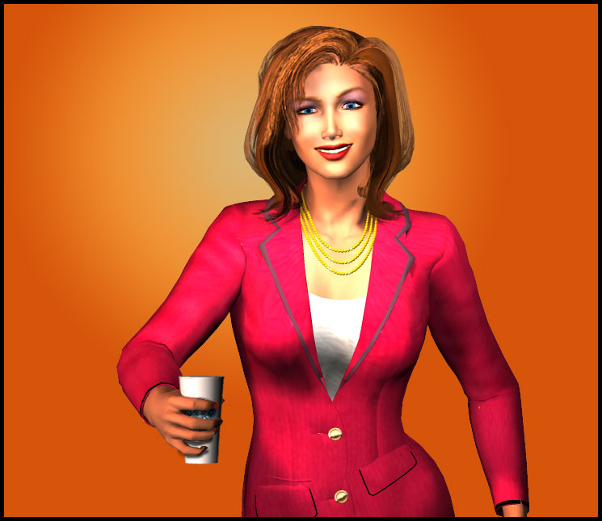

Brianna Excuse me, Ms. Shepperton…
Brianna Hi, I'm Brianna Watkins from East Chaparral High - we were supposed to meet at 11:30?
Kylee Oh… oh, okay — great, let me get a mochaccino and I'll join you in a minute, Sweetie!
Kylee (Angered hushed tones into phone) Phil, PHIL — what in the hell are you doing to me? — you set up this ridiculous mentorship thing, the least you could have done is find a mini-me to work with - this girl is NOT a mini-me… I am so gonna get you for this, Phil
Kylee Sorry for bein' late — newsroom business and all

Brianna If I were a source, would you have been late?
Kylee Heh, here's a mochaccino for you
Brianna Sorry, I don't drink coffee
Kylee Oh, Honey, you will in this industry - might as well learn how to swallow now
Kylee gulps down half her cup.
Kylee So… I'm sorry, what is your name again?
Brianna Brianna Watkins
Kylee Nice to meet you, Ms. Watkins — I'm Kylee Shepperton, KCON's lead anchor
Brianna Yes, I know
Kylee I know, too, I just love sayin' it out loud — did you know they rebuilt the entire NewsCenter8 set for me? — the new one features colors and woods that better accentuate my eyes and skin tones
Brianna I did not know that
Kylee And I love the name Brianna, it's so sweet — it's today's name what ‘Jennifer' was in my day and what ‘Brandy' was in my momma's time — y'know, I was almost a Brandy but my bitchy aunt took it for her youngin' — thank the good lord because Brandy Shepperton sounds like a beverage and we just had an in-house memo not too long ago about losing female talent with too-cutesy names — now they want us all to be smart and professional sounding with a little bit of ethnic flavor thrown in… I mean, flava, yo
Brianna How many cups of coffee did you have before this one?
Kylee We get little love notes from management — "stripes are not your friend," "that hairdo makes you look fat," "lose the disco belt," "too much lip gloss looks like lube," "you're slouching too much" — it's like a daily dose of momma in a memo
Brianna Should I be writing this down?
Kylee (Shocked) Can you?
Brianna My legs don't work but everything else does, including my brain
Kylee Do you need a diaper?
Brianna No, and it's called a catheter
Kylee What about…
Kylee What about your hooha?
Brianna I think the AP Style Book refers to it as a vagina
Kylee Can you have sex?
Brianna It doesn't just have to be between the legs — a simple touch anywhere in my upper body is stimulating
Kylee Oh my, I hope when I shook your hand earlier, you didn't mistake it for foreplay?
Brianna Um, no
Kylee I just don't do black people, women, or the physically handicapped — emotionally handicapped is another story — anyway, all three of y'all at once would be a whole new world for me and I ain't done with this one yet
Brianna Back to the reason we're here…
Kylee That's right, I'm your sponsor
Brianna Mentor
Kylee Right — you are gonna learn a lot from me, Missy
Brianna What I've learned so far is kinda scary
Brianna I actually find cigarettes offensive
Kylee (Lighting up anyway) You're already in a chair, what's a little smoke?
Brianna And this is a no-smoking area
Kylee Keep an eye on your really ugly man watch there and time how long it takes for someone to say something to me — I guarantee it won't be from the male persuasion
Brianna Uh-kay
Kylee So, tell me about yourself, Bree?
Brianna Brianna — I'm not a cheese
Kylee Tell me something about yourself, Biotch?
Brianna Only if you promise to stop being all down with the teen slang — it doesn't work for your flat, white ass
Brianna FYI, I'm an editor at my high school newspaper and I also run a student rights blog
Kylee A blog, how quaint
Brianna It's not quaint, it's the future - you aren't owned by a corporation and you can express yourself with total transparency, unlike today's media
Kylee Oh, Darlin', please - everyone one, including you, always has something to promote and something to hide - there is no such thing as absolute transparency — except maybe in the case of plastic wrap… mmm, that reminds me of a time in D.C.
Brianna (Interrupting) Just so you know, I'll be writing an article on our meeting, you might want to keep your NC-17 stories on the down low
Kylee Like I could ever compete with y'all — I saw the movie "Kids"
Brianna We're not all like that
Kylee Riiight
Brianna If you and the media in general stopped encouraging stupid stereotypes, maybe we'd be better off as a society?
Kylee You know what you are to society, Rihanna?
Brianna Brianna
Kylee You're a triple token
Brianna A triple what?
Kylee A triple token — you got the gender/non-Caucasian/disabled thing going for you — Honey, become Jewish and make it beyond impossible to be fired
Brianna I can't even believe what I'm hearing
Kylee Do I need to speak up? — I thought you said your head was fine?
Brianna My head is fine
Kylee Actually not — we're seriously gonna hafta do somethin' about your hair, especially if you have broadcast aspirations
Brianna I have serious journalism aspirations, not newsmodel ones
Kylee Also, you might want to consider more vibrant colors for your complexion — and don't they have sexy wheelchair accessories now? — you should match your nail polish to your spokes
Brianna Wow, just wow
Kylee Do that again!
Brianna What?
Kylee Open your mouth really really big
Brianna Why?
Kylee I wanna see how wide you can git it
Brianna Whyyyyyyy?
Kylee Listen, 90% of the female anchors and 75% of the male ones you see on network and cable are there mainly because of who they blew and/or are blowin'
Brianna Speak for yourself
Kylee I am, now you need to pay attention, Miss ADD — blowin' doesn't just have to be with the corporate owner suits, it can easily be with those with financial or political favors to a partner of the corporation
Brianna What about the non-blowers, how did they get their jobs?
Kylee They're usually some mega-rich person's daughter or nephew or godchild
Brianna None of them got there because of their brains or reporting talent?
Kylee Oh sure, there are a few of those — we call them "the exceptions" — McBride was a good example of that
Brianna She was awesome, whatever happened to her?
Kylee Don't know, don't care — back to me — what were we sayin'?
Brianna Blowers and non-blowers?
Kylee Ah yes - it's all a commodity — of course, it's always been that way for us gals in any business — a woman's two main jobs have always been momma and whore way before the Bible
Brianna Times have changed
Kylee Not really, when you truly think about it… not really
Brianna Funny, the news director at KCON's rival station is a woman
Kylee Have you not been paying attention to the blowin' part of my presentation?
Brianna She's married with kids
Kylee Sugarpie, that is the biggest front out there — you have so much to learn, so shut your yap and listen up!
Brianna I thought you wanted my mouth open?
Kylee You know, I have to laugh at those CEO ladies who think otherwise — they are just a-foolin' themselves — see, I accepted this reality early on and I didn't try to fight it or ignore it and look how far I've come
Brianna That's spelled c-u-m, correct?
Kylee Are you gonna sit there and snark the entire time?
Brianna I was hoping to ask some real questions but I find all of this totally fascinating in a very sick way — please go on
Kylee I'll give you this — they do occasionally trot out the nominal unattractive chick in broadcast to pretend like they believe in ladies with brains, print is full of ‘em but that's a dying dinosaur — heh, we have one of them fugglies now at KCON, she's over 40, over 200 lbs., beady eyes like a Rottweiler, and does a special report maybe once a week on shit no one gives a crap about but we have to be representative
Brianna And didn't she just win a Peabody Award?
Kylee Now she has a round piece to add to her dildo collection
Brianna Don't be such a hater!
Kylee You're right, I am being a tad mean — I do have a couple of friends… well, I technically shouldn't call them friends since they are rivals and openly despise me — anyway, one has a masters from Northwestern and is basically doing fluff pieces
Brianna But that's how most women in the business start out, right?
Kylee She's been doing it for 10 years
Brianna Oh
Kylee And the other friend is working on her communications PhD from Columbia and works behind the scenes at one of the major networks — they won't even consider her for on-air until she gets a nose job and loses about 50 shades of black
Brianna Way harsh
Kylee No offense, Honey, you're one of the pretty coloreds
Brianna True that!
Kylee Wanna know a not-so-secret secret? - the stations actively pimp out us gorgeous gals to the viewers so some sweaty loser with one hand on the remote and the other God knows where can watch and pretend he has a shot with us
Brianna I'm kinda thinking he does from what I've heard so far
Kylee I'll tell you what - the next time you're on that blog thang of yours, take a look at the ‘hottie anchor chick' fan sites - we are encouraged to have stalkers, it means that the coveted male demographic is watchin' and beatin' off to our images, it doesn't matter what comes out of our mouths as long as there is the fantasy and eventual reality of some guy putting his dick in it
Brianna That sounds like a sweeps stunt in the making
Kylee I know - it's just like Hollywood - no one wants to watch ugly people, fat people, or cripple people fucking… although you have a cute face, you might be able to garner a fetish following
Brianna So, basically I stand a better chance at success if I look like I was just unwrapped out of a plastic box from the Toys ‘R Us aisle?
Kylee See, you're learnin'
Brianna That's never gonna happen, so I'll need to rely on being extra smart and persistent
Kylee Don't worry — stations hire these make-over artists now, they'll help you with everything from primping to proper posture — I, of course, never needed that because of what I learned in my pageant days
Brianna Do they help you with anorexia, too?
Kylee (Taking out another cigarette) I am so sick of hearing about this eating disorder shit — this is an actual fact that you can put into that article of yours — the camera doesn't add 10 lbs., it adds 15, especially on women — there is nothing wrong with being in shape, especially when you have to go before those cameras — enough already with the anorexia BS!
Brianna What did you have to eat today?
Kylee What?
Brianna Besides endless cups of caffeine and cancer sticks?
Kylee Don't look at me like that, little girl — you of all people know sometimes… most of the time… we do what we need to do to in order to survive and not to make snap judgments based solely on appearance
Brianna Like you did with me earlier?
Kylee (Looking away) I did no such thing
Brianna Garden tool, I suggest you check yourself out in the longest mirror possible and see what kind of appearance you be projectin', a'ight?
Kylee I can't believe I am having this conversation with a high-schooler who has to pee in a tube!
Brianna At least I don't have tubes peeing in me!
For one brief second, Kylee grabs her beverage and considers throwing it at Brianna.
Brianna (Taking out her camera phone) Go for it, you'll be my ticket into the Massachusetts university of my choosing
Kylee I hope your wheels slip on the ice and a bus finishes off the upper half of you!
Brianna Why a bus? - why not a Mercedes? - or a truck or a snowplow? - because I'm black, you instantly thought of a bus?
Kylee No, no, I instantly thought of your bloody carcass in the middle of the asphalt, chica
Brianna Wrong raza, chickenhead
Kylee What, are you gonna school me now? - am I gonna hafta be bused?
Brianna That's it, I'm putting in for a new mentor
Kylee (Noticing) OH MY, I GUESS WE ARE NOT GOOD ENOUGH TO BE A-SITTIN' NEXT TO THE BONIVA PATROL
Brianna Sistah, they're not good enough to be sitting next to us!
Kylee (Extending her hand) Truce?
Brianna (Taking it) Truce
Kylee (Squeezing Brianna's fingers) Did I just get to second base?
Brianna You need to buy me real food, first — none of this coffee house junk
Kylee I'm gonna run back inside and freshen up my beverage, do you want anything?
Brianna When you come back, I'd like to ask more questions and, hopefully, get answers that I can actually print in my piece
Kylee (Getting up) You can print what I've said so far
Brianna Highly doubtful
Kylee Can't or won't?
Brianna Oh, I absolutely can but my faculty adviser would go ape-shit, threaten to pull the piece and suspend me from the staff - and, when she'd call you to confirm the quotes, you'd deny saying any of it
Kylee (Wry smile) You're smart as a whip, Cutie
Kylee But a real clever writer would find a way to get what I said out there without editorial repercussions
Kylee (Offering some to Brianna) Wanna bite?
Brianna No thanks — I do want to ask you about the recent shake-up at KCON and the crazy happenings in our area over the last year?
Kylee I know it's been tough times lately but, in all honesty, I couldn't be at a happier place in my life
Brianna Specifics, please
Kylee All of the tragic incidents over the past several months have, for better or worse, given the Santa Conchita Valley, specifically Duquesa Bay, a name besides ‘that city between Los Angeles and San Francisco' — kinda like what happened to Simi Valley after the Rodney King trial
Brianna I'm not sure notoriety is the best publicity
Kylee I thought you said you were studying journalism?
Brianna Tell me more about your own experiences at NewsCenter8?
Kylee (Eating the icing off the cake) Mmm lessee, I'm finally the lead anchor thanks to the sudden death of Grand Empress Claudia Steel and the retirement of that old goat that sat next to her
Brianna (Picking at the cake) Sounds like you're still grief stricken
Kylee Ooh, and the network is grooming me for the national morning show in a few years, I just bought myself a top-of-the-line Mercedes, my closest on-air rival is totally out of the business now, and her pain-in-the-ass producer has fled to an island — HOO RAY
Brianna Do you have time for a personal life?
Kylee More than you think but I don't need one right now - my "boyfriend" hasn't bothered with me in months - I don't know if he's gone back to his wife or found someone else
Brianna I could look him up on MySpace for you?
Kylee I don't think he's on there — and I really don't care, no more need for the bruise-concealing foundation… ha ha, just kidding
Brianna For your sake, Girlfriend, I hope you are
Kylee When I first started in this business after becoming Miss Alabama, I thought I'd stay in it a few years until I married a rich husband - but now I'm actually expected to do real work and, you know what, I kinda like it… and I'm not ready to get stretch marks on my tummy yet
Brianna (Flipping through her notebook) I did some checking on your internet stats — there were 194 comments made about your eyes, 53 references to your breasts, 107 involving your hair, 22 about your hands, 18 of which involved your fingernails, and daily posts about your wardrobe and jewelry selections
Kylee (Horrified) Only 53 comments about my titties, are you sure you counted that right?
Brianna I am the vice president of my school's calculus club
Kylee Huh, guess it's time for a new bra then
Brianna There was also one positive comment about you graduating with honors with a communications degree… and that's because I posted it
Kylee Aww, that's so sweet, thank you — but, next time, could you post something positive about my titties, too?
Brianna On second thought, I'm going to keep you as my "mentor" — we have a lot to teach each other
Kylee Sounds like a plan - I can't believe I'm actually sayin' this but you make me miss Takanachi
Brianna Who?
Kylee Someone who didn't like me very much
Brianna Apparently, there's more than one
Kylee Hey, I thought we were getting along?
Brianna (Pointing) I didn't write that